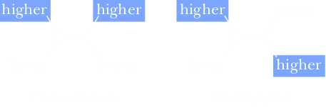

Alkenes
An unsaturated hydrocarbon contains one or more carbon-carbon double or triple bonds. The term “unsaturation” indicates that there are fewer hydrogens bonded to carbon than in an alkane, CnH2n + 2. The three most important classes of unsaturated hydrocarbons are alkenes, alkynes, and arenes. Alkenes contain a carbon-carbon double bond and, with one double bond and no rings, have the general formula CnH2n. Alkynes contain a carbon- carbon triple bond and, with one triple bond and no rings, have the general formula CnH2n−2. The simplest alkene is ethylene, and the simplest alkyne is acetylene.
Using valence-shell electron-pair repulsion (Section 1.4) for a carbon-carbon double bond, we predict a value of 120° for the bond angles about each carbon. The observed H−C−C bond angle in ethylene is 121.1°, close to that predicted. In other alkenes, deviations from the predicted angle of 120° may be somewhat larger because of the strain introduced by nonbonded interactions created by groups bonded to the carbons of the double bond. The C−C−C bond angle in propene, for example, is 123.9°
 

 

Nomenclature
Alkenes are named using the IUPAC system, but, as we shall see, some are usually referred to by their common names.
IUPAC Names
To form IUPAC names for alkenes, change the -an- infix of the parent alkane to -en- (Section 2.3C). Hence, CH2=CH2 is named ethene, and CH3CH=CH2 is named propene. In higher alkenes, where isomers exist that differ in location of the double bond, a numbering system must be used. According to the IUPAC system,
Number the longest carbon chain that contains the double bond in the direction that gives the carbon atoms of the double bond the lowest possible numbers.
Indicate the location of the double bond by the number of its first carbon.
Name branched or substituted alkenes in a manner similar to alkanes.
Number the carbon atoms, locate and name substituent groups, locate the double bond, and name the main chain.


Note that there is a chain of six carbon atoms in 2-ethyl-4-methyl-1-pentene. However, because the longest chain that contains the double bond has only five carbons, the parent hydrocarbon is pentane, and the molecule is named as a disubstituted 1-pentene.
Furthermore, the common names methylene, vinyl, and allyl are often used to show the presence of the following alkenyl groups:
Methylene: CH2= group
Vinyl: CH2=CH− group
Allyl: CH2=CHCH2−
| Alkenyl Group | IUPAC Name | Common Name | Example | IUPAC Name (Common Name) |
|---|---|---|---|---|
| CH2= | Methylidene | Methylene |  | Methylidenecyclopentane (Methylenecyclopentane) |
| CH2=CH− | Ethenyl | Vinyl |  | Ethenylcyclopentane (Vinylcyclopentane) |
| CH2=CHCH2− | 2-Propenyl | Allyl |  | 2-Propenylcyclopentane (Allylcyclopentane) |
Cis,Trans Isomerism in Alkenes
Because of restricted rotation about a carbon-carbon double bond, any alkene in which each carbon of the double bond has two different groups bonded to it shows cis,trans isomerism. For example, 2-butene has two stereoisomers. In cis-2-butene, the two methyl groups are on one side of the double bond and the two hydrogens are on the other side. In trans-2-butene, the two methyl groups are on opposite sides of the double bond. These two compounds cannot be converted into one another at room temperature because of the restricted rotation about the double bond; they are different compounds (diastereomers), with different physical and chemical properties.
Cis alkenes with double bonds in open chains are less stable than their trans isomers because of steric strain between alkyl substituents on the same side of the double bond, as can be seen in space-filling models of the cis and trans isomers of 2-butene. This is the same type of strain that results in the preference for equatorial methylcyclohexane over axial methylcyclohexane (Section 2.5B). Trans-2-butene is more stable than the cis isomer by about 4.2 kJ (1.0 kcal)/mol because of the sum of steric strain and angle strain that results from the two methyls moving apart. At the energy minimum, the C=C−CH3 angle for cis-2-butene is about 127°.
The E,Z System
Because the cis,trans system becomes confusing with tri- and tetrasubstituted alkenes and is not detailed enough to name all alkenes, chemists developed the E,Z system. This system uses the priority rules of the R,S system (Section 3.3) to assign priority to the substituents on each carbon of a double bond. Using these rules, we decide which group on each carbon has the higher priority. If the groups of higher priority are on the same side of the double bond, the confi guration of the alkene is Z (German: zusammen, together). If they are on opposite sides of the double bond, the alkene is E (German: entgegen, opposite).
Throughout this text, we use the cis,trans system for alkenes in which each carbon of the C=C bond bears a hydrogen. We use the E,Z system in all other cases. The E,Z system should always be used if confusion is possible.
Cycloalkenes
In naming cycloalkenes, the carbon atoms of the ring double bond are numbered 1 and 2 in the direction that gives the substituent encountered fi rst the smaller number.
Dienes, Trienes, and Polyenes
For alkenes containing two or more double bonds, the infix -en- is changed to -adien-, -atrien-, and so on. Those that contain several double bonds are also referred to more generally as polyenes (Greek: poly, many). Following are examples of three dienes.
| 1,4-Pentadiene |  2-Methyl-1,3-butadiene 2-Methyl-1,3-butadiene(Isoprene) | 1,3-Cyclopentadiene |
Cis,Trans Isomerism in Cycloalkenes
Following are structural formulas for four cycloalkenes:
In these representations, the configuration about each double bond is cis. Is it possible to have a trans configuration in these and larger cycloalkenes? To date, trans-cyclooctene is the smallest trans cycloalkene that has been prepared in pure form and is stable at room temperature. Yet, even in this trans cycloalkene, there is considerable angle strain; the double bond’s 2p orbitals make an angle of 44° to each other. Cis-cyclooctene is more stable than its trans isomer by 38 kJ (9.1 kcal)/mol. Note that the trans isomer is chiral even though it has no chiral center.